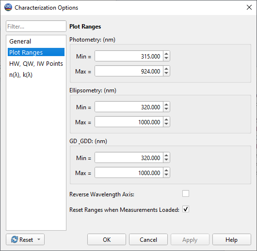
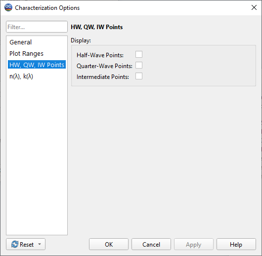

Characterization Options
The Characterization Options window has 4 tabs.
At the General tab The number of tests of the layer characterization procedure is specified. The default number is 10.
The Substrate Thickness field allows for the specification of the substrate’s thickness.
The Reflectance Without Back Side field should be checked if the reflectance measurements do not include the reflectance from the substrate’s backside.
The Transmittance Without Back Side field must be checked if the transmittance measurements are performed with an antireflection coating on the backside of the substrate.
The Ellipsometry Without Back Side option is checked by default. This corresponds to ellipsometric measurements where the effect of backside reflection is eliminated. The recent version of OptiChar is capable of processing ellipsometric data that have depolarization caused by backside reflections. See H. Fujwara, Spectroscopic Ellipsometry Principles and Applications, John Wiley & Sons, 2007, ISBN 978-0-470-01608-4. Uncheck this option to account for changes in ellipsometric angles caused by backside reflections.
Depolarization values measured by Woollam ellipsometers can also be processed.
The Show Measurement Correction options activates the corresponding settings in all Characterization and Refinement dialogs. Measurement Correction options are now hidden by default, as they are required only in very rare occasions.
At the Plot Ranges tab, wavelength ranges for the display of photometric/ellipsometric/GD & GDD data are specified.

It is also possible to reverse the wavelength axis using the corresponding checkbox.
Reset Ranges when Measurements Loaded activates an algorithm that tries to automatically determine the best plotting ranges for a new measurement data set.
The HW, QW, IP Points tab allows the user to enable/disable the display of Half-Wave, Quarter-Wave, and Intermediate Points in the Data Fitting window.

See the text “Advanced Thin-Film Optical Coatings: Characterization” for more information concerning these points.
The n, k(λ) tab allows the user to specify the number of grid points used in numerical representations of these functions.
Large numbers of points increase computational time, but allow for characterization of finer details. Large values are only reasonable for very precise measurements with low levels of random and systematic noise.
It is also possible to select how the points in the grid are distributed. Available selections include Linear, Logarithmic, and Inversely Proportional.